26 German Election 2021—what happened?
“Just because you do not take an interest in politics doesn’t mean politics won’t take an interest in you.”
Background Angela Merkel was Chancellor of Germany from 2005 to 2021. The election in Autumn 2021 could be said to be the first of a new era in German politics.
Questions Which parties did well in the 2021 election? Are there geographical patterns in party support? What structural factors are linked to party support? Are Erststimmen (votes for candidates) and Zweitstimmen (votes for parties) closely related?
Sources The Bundeswahlleiter (Federal Returning Officer) has a website (Bundesamt (2021)) offering detailed election results in various forms, a dataset of demographic and structural data for each constituency, and maps of the constituencies. UK election data is available in the R package parlitools.
Structure There were 299 constituencies in 16 Bundesländer (states), just over 61 million registered voters, almost 200 smaller parties or groups standing in one or more constituencies, and 7 larger parties each getting over 2 million votes.
26.1 Who won the 2021 election?
The two big parties in the pre-election coalition, the conservative grouping of CDU/CSU and the social democratic SPD, were being challenged by the FDP (the traditional liberal party), die Linke (a party on the left), the Greens, and the AfD (a right-wing party).
Everyone has two votes in an election for the German parliament, a vote for a candidate (Erststimme or first vote) and a vote for a party (Zweitstimme or second vote). There is one seat for each constituency that goes to the candidate with the most Erststimmen. Additionally, about the same total number of seats are allocated to parties based on each party’s share of the Zweitstimmen in the respective Bundesland. Needless to say, it is more complicated than that. Extra seats (Ueberhangmandate and Ausgleichsmandate) may be needed to satisfy the election rules. In the early years of the Bundesrepublik there were only Überhangmandate, designed to allow parties to win more individual seats than were due them according to their Zweitstimmen share. The system was declared unconstitutional and changed for the 2013 election. Since then Ausgleichsmandate have been included, additional seats to ensure that the Zweitstimmen shares of the parties are respected. There have been further attempts to amend the rules, not particularly successfully. In 2021 there were 138 extra seats, increasing the intended size of the parliament from 598 to 736. In 2017 there had been only 111 and in 2013 only 33. Figure 26.1 shows the numbers since the first postwar election in 1949, when the system was introduced. There is optimism that the government elected in 2021 will introduce a system in accordance with the constitution that will strictly limit the total number of seats in the Bundestag.
Code
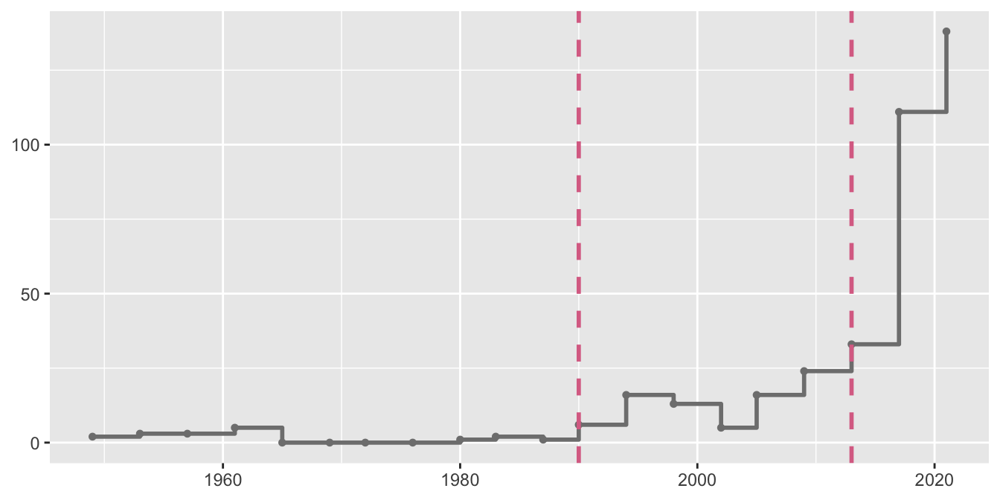
Figure 26.1: Extra seats in German elections since 1949. Each point marks the date of an election. The left dashed line marks the first election after reunification in October 1990. The right dashed line marks the first election with Ausgleichsmandate.
The support for the main parties in the elections of 2021 and 2017 is shown in Figure 26.2. Colours associated with the parties have been used. The CDU/CSU lost heavily, while the SPD and Greens gained. Changes in party performance are easier to see in a plot of the gains and losses in percentage points. It is now apparent that the Greens gained more than the SPD and the Linke lost heavily. The relatively big gain for ‘Other’ parties is also striking.
Code
data(GermanElection21)
btw1v <- GermanElection21 %>% group_by(WkNr, Stimme) %>% mutate(sum21=sum(Anzahl), sum17=sum(VorpAnzahl), Prozent21=100*Anzahl/sum21, Prozent17=100*VorpAnzahl/sum17)
btwV <- btw1v %>% ungroup() %>% filter(Stimme==2) %>% mutate(Party=fct_lump_n(Partei, w=Anzahl, n=7))
btwV <- btwV %>% mutate(party=fct_collapse(Party, CDUCSU=c("CDU", "CSU"), Linke="DIE LINKE"))
polnames2 <- c("CDUCSU", "SPD", "FDP", "GRÜNE", "AfD", "Linke", "Other")
polpal2 <- c("black","red", "yellow", "green", "blue", "violet", "grey70")
names(polpal2) <- polnames2
bdiff <- btwV %>% group_by(party) %>% summarise(s21=sum(Anzahl), s17=sum(VorpAnzahl), d4=s21-s17)
bdiff <- bdiff %>% ungroup() %>% mutate(S21=sum(s21), S17=sum(s17), p21=100*s21/S21, p17=100*s17/S17, d4p=p21-p17)
bdiff <- bdiff %>% mutate(party=fct_reorder(party, -p21))
w <- ggplot(bdiff, aes(party)) + scale_fill_manual(values=alpha(polpal2, 0.8)) + ylab(NULL) + xlab(NULL) + ylim(0,35) + theme(legend.position="none", plot.title = element_text(vjust = 3))
w1 <- w + geom_bar(aes(fill=party, weight=p21)) + ggtitle("Party support in 2021")
w2 <- w + geom_bar(aes(fill=party, weight=p17)) + ggtitle("Party support in 2017")
w1/w2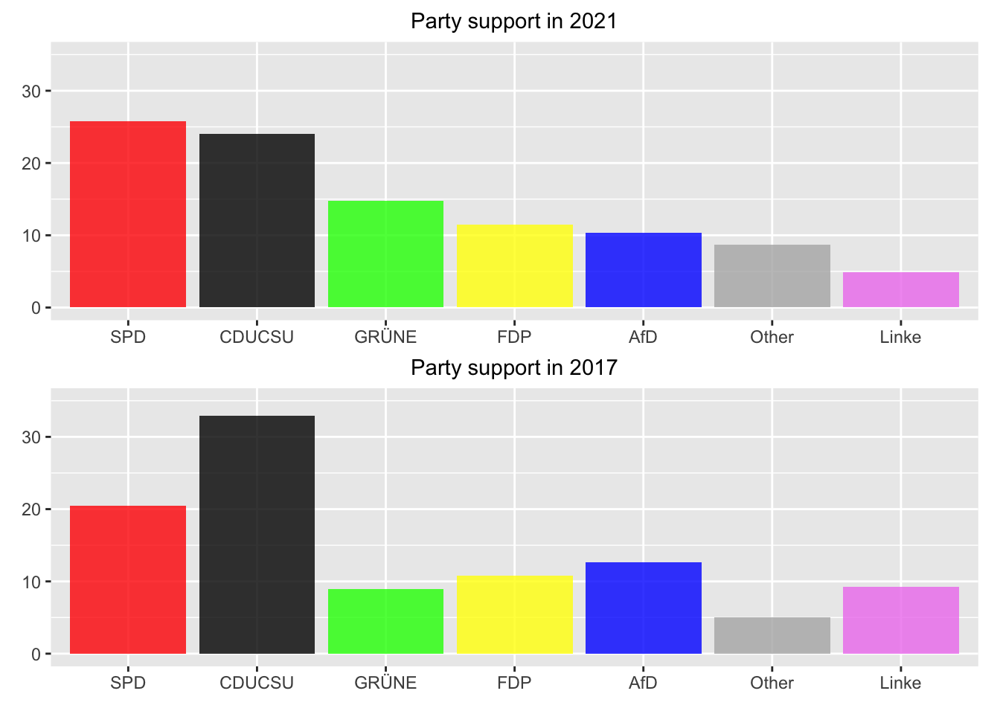
Figure 26.2: Party percentage support (in Zweitstimmen) for the last two elections
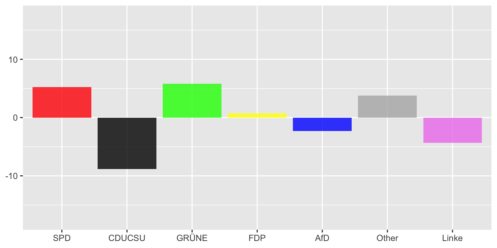
Figure 26.3: Changes in party percentage support between the last two elections
Absolute changes can be deceptive. The Greens gained more than the SPD, but from a much lower base. An UpAndDown plot shows the relative changes. The base of each bar is the party support in votes in 2017. The height of each bar is the change in party support as a percentage of their votes in 2017, so the bar areas equal the absolute changes. The strong performance of the Greens (and the even stronger performance of ‘Other’ parties in percentage terms) is more apparent, along with the poor performance of the Linke.
Code
yy <- ud_prep(bdiff, v1="s17", v2="s21", levs=c("party"), sortLev=c("final"), reverse=TRUE)
y2b <- ud_plot(yy, totperc="no", vscale=c(-80, 80),labelvar="party", levelColour="party", ud_control=ud_colours(colours=c("grey75", "grey60", "red", "grey60", "green"), gcpal=polpal2))
y2bX <- y2b$uad + theme(legend.position="none")
y2bX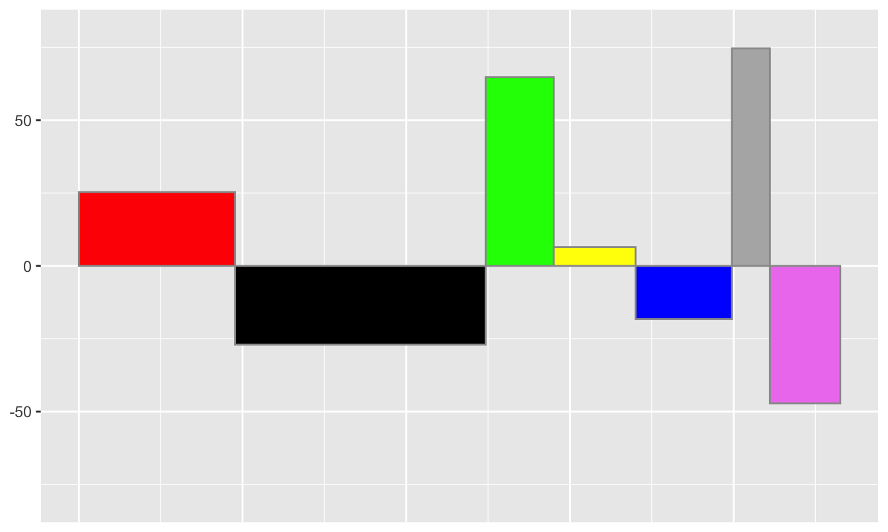
Figure 26.4: Relative changes in support between the last two elections
A key advantage of UpAndDown plots is that area is conserved when drilling down. Figure 26.5 shows the changes by region (West, East, Berlin) for each party. The SPD and FDP improved most in the East, albeit from low levels at the last election in 2017. ‘Other’ parties did better in the West than the East.
More detail can be seen in Figure 26.6 where the changes are shown for each party by Bundesland with the Bundesländer ordered by size. The SPD gained everywhere, but especially in the smaller Bundesländer. The CDU/CSU lost everywhere, but more in the smaller Bundesländer. The Greens did very well in Nordrhein-Westfalen and well everywhere else, with one exception. In Saarland, thanks to internal party disagreements, they did not fulfill the requirements for receiving Zweitstimmen and got none. The FDP mostly gained, but did badly where the Greens did best in Nordrhein-Westfalen. The AfD lost to different degrees everywhere except in Thüringen. ‘Other’ parties as a group had some big percentage gains (which is why the scale is different to that in Figure 26.4 and still does not include all values). The Linke lost roughly equally in all Bundesländer.
Code
Bdiff <- btwV %>% group_by(Region, party) %>% summarise(s21=sum(Anzahl), s17=sum(VorpAnzahl))
YY <- ud_prep(Bdiff, v1="s17", v2="s21", levs=c("party", "Region"), sortLev=c("final", "base"), reverse=c(TRUE, TRUE))
Yb <- ud_plot(YY, totperc="no", vscale=c(-120, 120),labelvar="party", levelColour="party", ud_control=ud_colours(colours=c("grey75", "grey60", "red", "grey60", "green"), gcpal=polpal2))
Yb$uad + theme(legend.position="none")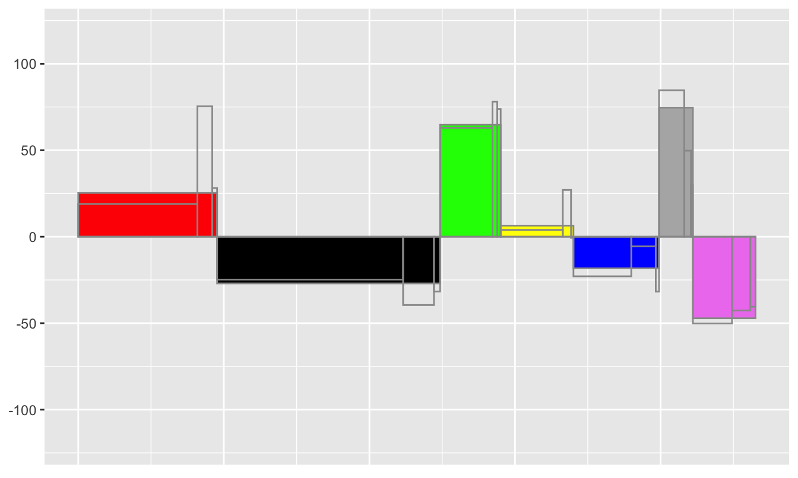
Figure 26.5: Relative changes in support by party and region.
Code
Bdiff <- btwV %>% group_by(Bundesland, party) %>% summarise(s21=sum(Anzahl), s17=sum(VorpAnzahl))
YY <- ud_prep(Bdiff, v1="s17", v2="s21", levs=c("party", "Bundesland"), sortLev=c("final", "base"), reverse=c(TRUE, TRUE))
Yb <- ud_plot(YY, totperc="no", vscale=c(-120, 120),labelvar="party", levelColour="party", ud_control=ud_colours(colours=c("grey75", "grey60", "red", "grey60", "green"), gcpal=polpal2))
Yb$uad + theme(legend.position="none")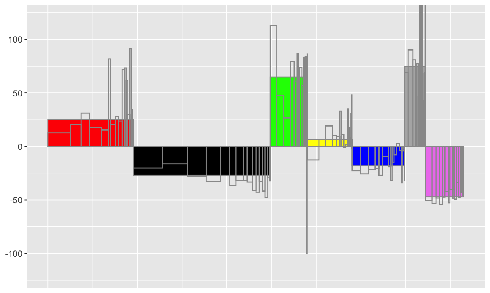
Figure 26.6: Relative changes in support by party and Bundesland.
26.2 Are there geographic patterns?
There are strong geographic patterns in party support across the constituencies. Figure 26.7 shows support for the Greens in choropleth maps.
Code
drawGrob = function(grob, row, col) {
pushViewport(viewport(layout.pos.row = row, layout.pos.col = col))
grid.draw(grob)
upViewport()
}
pushViewport(viewport(layout = grid.layout(nrow = 2, ncol = 2, heights = c(.75, .25))))
print(gr1, vp=viewport(layout.pos.row = 1, layout.pos.col = 1))
print(gr2, vp=viewport(layout.pos.row = 1, layout.pos.col = 2))
drawGrob(ggplotGrob(hg1), 2, 1)
drawGrob(ggplotGrob(hg2), 2, 2)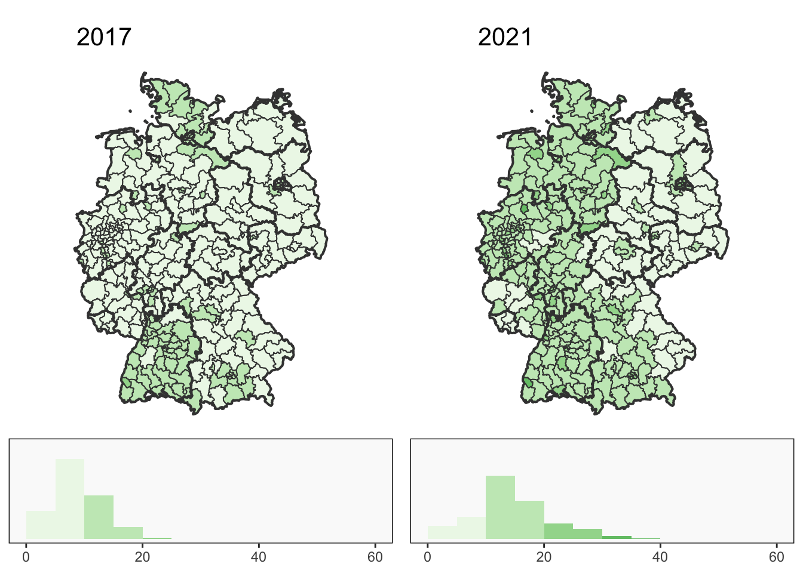
Figure 26.7: Percentage Green support across the constituencies in 2017 (left) and 2021 (right). Bundesland borders are drawn in thick black. The colour scale goes from 0 to 60 in intervals of 10 (histograms below).
The Greens did much better in 2021, predominantly in the West of Germany. They also did better in more densely populated areas, as Figure 26.8 shows using the logarithm of population density as a measure.
Code
data(GermanDemographics)
polreg <- c("royalblue", "grey40", "lightpink2")
names(polreg) <- c("Berlin", "East", "West")
f1z <- st_sf(data.frame(f1x, GermanDemographics))
f1za <- f1z %>% arrange(fct_rev(Region))
ggplot(f1za, aes(log(PopDensity), p21_GRÜNE)) + geom_point(aes(colour=Region), size=2) + ylab("Green support") + xlab("log(population density)") + scale_colour_manual(values=polreg) + theme(axis.title.y = element_text(angle = 0, vjust = 0.5))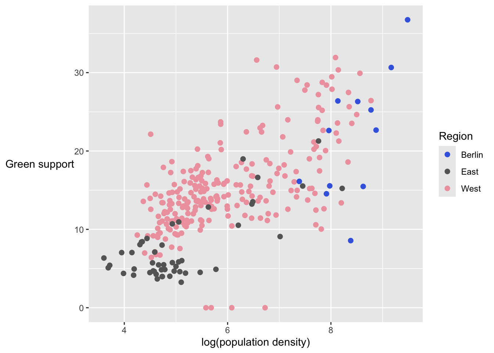
Figure 26.8: Green support plotted against log of population density
Aside from the four constituencies of Saarland where the Greens got no party votes, as already mentioned, there is a roughly linear relationship in the plot. The Greens did worst in the rural East and best in big cities including parts of Berlin. There is a little overplotting in Figure 26.8, so the points representing West were drawn first and the smaller East and Berlin groups on top.
Associations with other variables can be explored using a parallel coordinate plot (Figure 26.9). The Greens did well where there were more younger people and where there were more qualified to go to university.
Code
BundZ <- inner_join(btwVL, GermanDemographics, join_by(WkNr==WkrNr))
BundZ <- BundZ %>% mutate(logPopD=log(PopDensity), Greens=p21_GRÜNE, Ghigh=ifelse(Greens>25, "high", "low"), Univ=Hochschulreife)
BundZ %>% arrange(Greens) %>% pcp_select(Greens, Foreigners, logPopD, Age1824:Age75up, CarsPerP, Univ, Unemployed) %>% pcp_scale(method="uniminmax") %>% ggplot(aes_pcp()) + geom_pcp_axes(colour="white") + geom_pcp(aes(colour=Ghigh)) + ylab(NULL) + xlab(NULL) + theme(axis.text.y=element_blank(), axis.ticks.y=element_blank()) + scale_colour_manual(values=c("green", "grey85")) + theme(legend.position="none")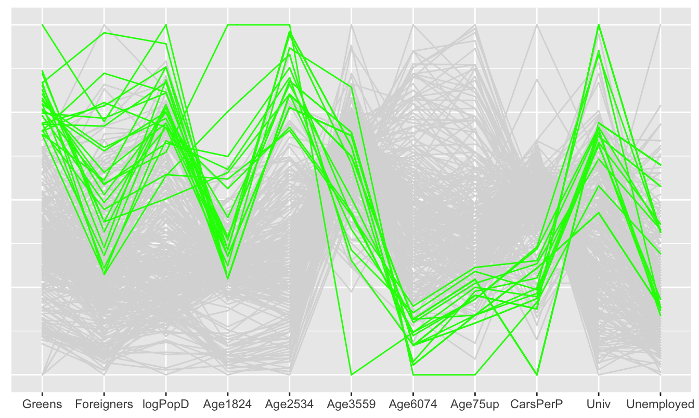
Figure 26.9: A parallel coordinate plot of Green support and some structural variables (constituencies with over 25% Green party votes are coloured green)
The AfD lost ground between the two elections and were weaker in the West.
Code
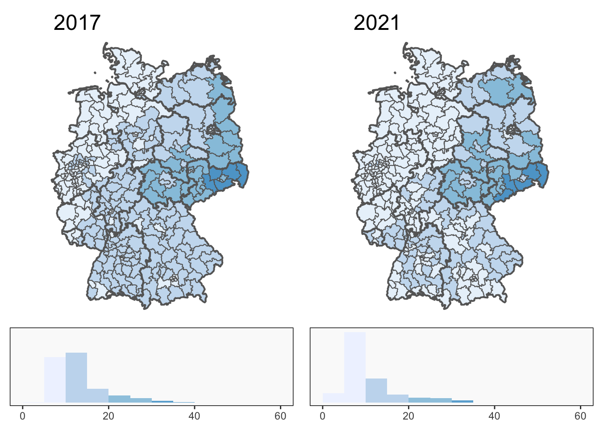
Figure 26.10: Percentage AfD support across the constituencies in 2017 (left) and 2021 (right). Bundesland borders are drawn in thick black. The colour scale goes from 0 to 60 in intervals of 10, as shown in the histograms below.
Code
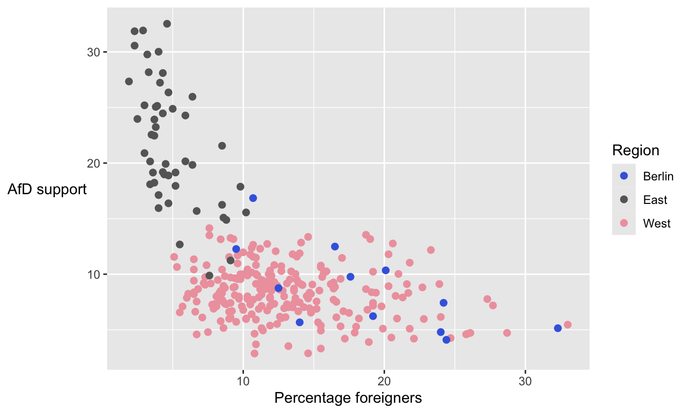
Figure 26.11: AfD support plotted against percentage of foreigners
Figure 26.12 is a parallel coordinate plot of AfD support and the same structural variables as in Figure 26.9. The AfD were strong where there were more older people and low levels of foreigners (people without German nationality). They did not do well in cities, where the population density is higher.
The scatterplot, Figure 26.11, shows more detail of how the AfD vote related to the percentage of foreigners in the constituencies. AfD support is highest where there are few foreigners and relatively constant for any percentage of foreigners a little over 10%. They are generally weaker in the Berlin constituencies than in the rest of the Eastern part of Germany, probably because West Berlin is still different to East Berlin, even over thirty years after reunification. The association may be due to foreigners not voting for the AfD or more due to the party being stronger in the East where there are lower percentages of foreigners.
Code
BundZ <- BundZ %>% mutate(AfD=p21_AfD, Ahigh=ifelse(AfD>20, "high", "low"))
BundZ %>% arrange(AfD) %>% pcp_select(AfD, Foreigners, logPopD, Age1824:Age75up, CarsPerP, Univ, Unemployed) %>% pcp_scale(method="uniminmax") %>% ggplot(aes_pcp()) + geom_pcp_axes(colour="white") + geom_pcp(aes(colour=Ahigh)) + ylab(NULL) + xlab(NULL) + theme(axis.text.y=element_blank(), axis.ticks.y=element_blank()) + scale_colour_manual(values=c("blue", "grey85")) + theme(legend.position="none")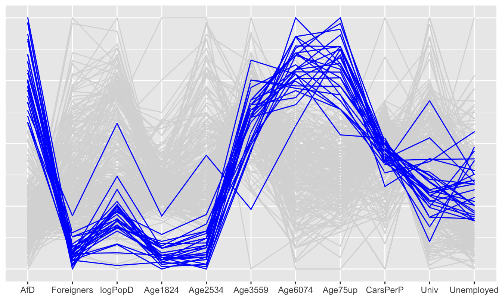
Figure 26.12: A parallel coordinate plot of AfD support and some structural variables (constituencies with over 20% AfD party votes are coloured blue)
The CDU/CSU have traditionally always been strong in Bavaria, the CSU’s part of Germany.
Code
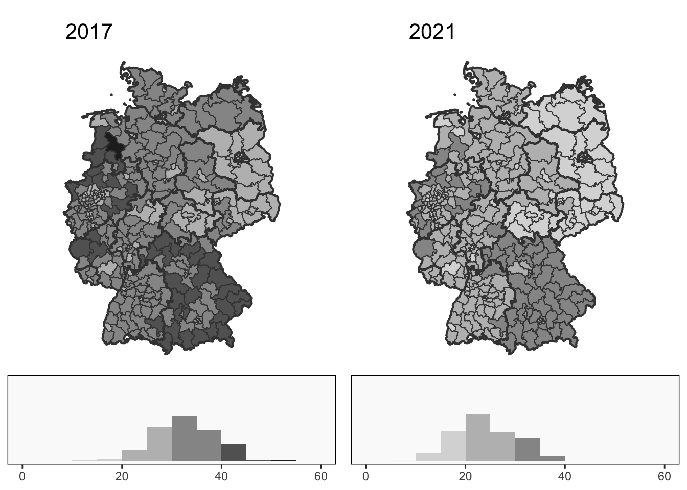
Figure 26.13: Percentage CDU and CSU support across the constituencies in 2017 (left) and 2021 (right). The colour scale goes from 0 to 60 in intervals of 10. Bundesland borders are drawn in thick black.
It is always possible with a large number of factors to find correlations that may or may not imply some causation. For the CDU/CSU one is car ownership, as Figure 26.14 illustrates.
Code
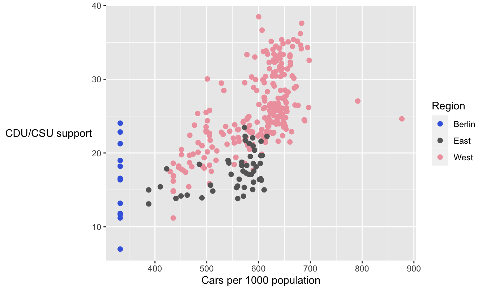
Figure 26.14: CDU and CSU support plotted against numbers of cars per thousand population.
As car density increases, so does support for the CDU and CSU. Car density tends to be lower in the East. The points to the far left are the 12 Berlin constituencies. For major cities car registration statistics are only available for the whole city and so all constituencies have the same (in this case, low) value. Cars are not so useful in large cities. The most outlying value to the right is Wolfsburg, Volkswagen’s main base, and the other one is Main-Taunus, between Opel’s base at Rüsselsheim and Frankfurt.
Drawing a parallel coordinate plot, as for the other two parties, shows that the CDU/CSU additionally did well in areas of lower population density where there were more middle-aged people and fewer unemployed.
Code
BundZ <- BundZ %>% mutate(CDUCSU=p21_CDUCSU, Chigh=ifelse(CDUCSU>30, "high", "low"))
BundZ %>% arrange(CDUCSU) %>% pcp_select(CDUCSU, Foreigners, logPopD, Age1824:Age75up, CarsPerP, Univ, Unemployed) %>% pcp_scale(method="uniminmax") %>% ggplot(aes_pcp()) + geom_pcp_axes(colour="white") + geom_pcp(aes(colour=Chigh)) + ylab(NULL) + xlab(NULL) + theme(axis.text.y=element_blank(), axis.ticks.y=element_blank()) + scale_colour_manual(values=c("black", "grey85")) + theme(legend.position="none")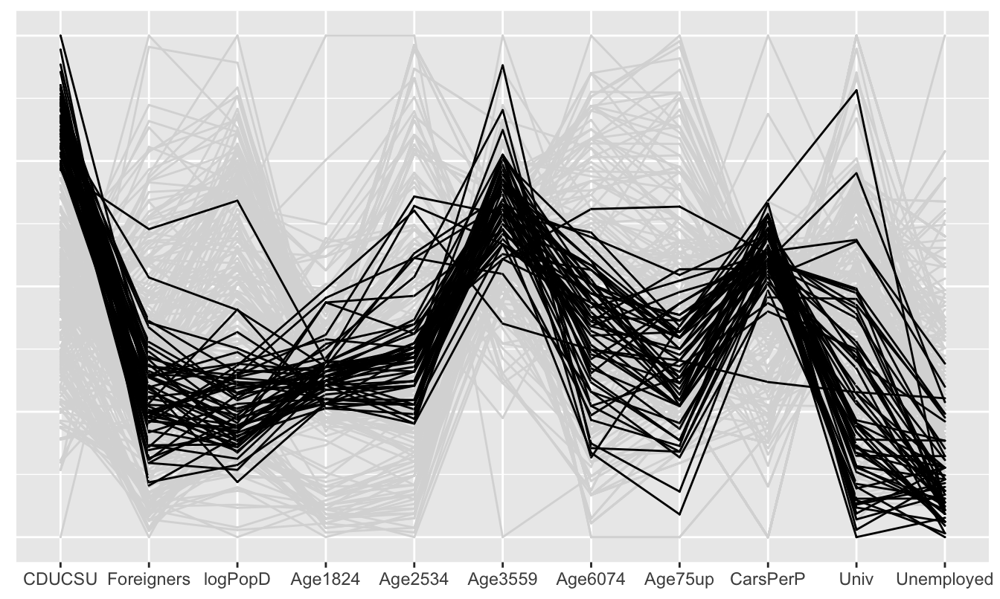
Figure 26.15: A parallel coordinate plot of CDU/CSU support and some structural variables (constituencies with over 30% party votes are coloured black)
26.3 Who won the first-past-the-post seats?
In each constituency there is a first-past-the-post system for the result of Erststimmen. In theory you might expect a few non-party winners, in practice there were none. Figure 26.16 shows a map coloured by the winning party.
Code
btwY <- btw1v %>% ungroup() %>% filter(Stimme==1)
btwYwin1 <- btwY %>% group_by(Bundesland, WkNr, WkName) %>% arrange(desc(Anzahl), .by_group=TRUE) %>% slice_head(n=1)
btwYwin1 <- btwYwin1 %>% mutate(WkNr=as.numeric(WkNr)) %>% arrange(WkNr)
f1y <- st_sf(data.frame(GermanyMap, btwYwin1))
polnames6 <- c("CDU", "CSU", "SPD", "GRÜNE", "AfD", "DIE LINKE")
polpal6 <- c("black","cadetblue2", "red", "green", "blue", "violet")
names(polpal6) <- polnames6
btwMX <- tm_shape(f1y) + tm_polygons(col="Partei", palette=polpal6, alpha=0.8) + tm_layout(frame=FALSE, legend.outside = TRUE, legend.title.color="white")
btwMX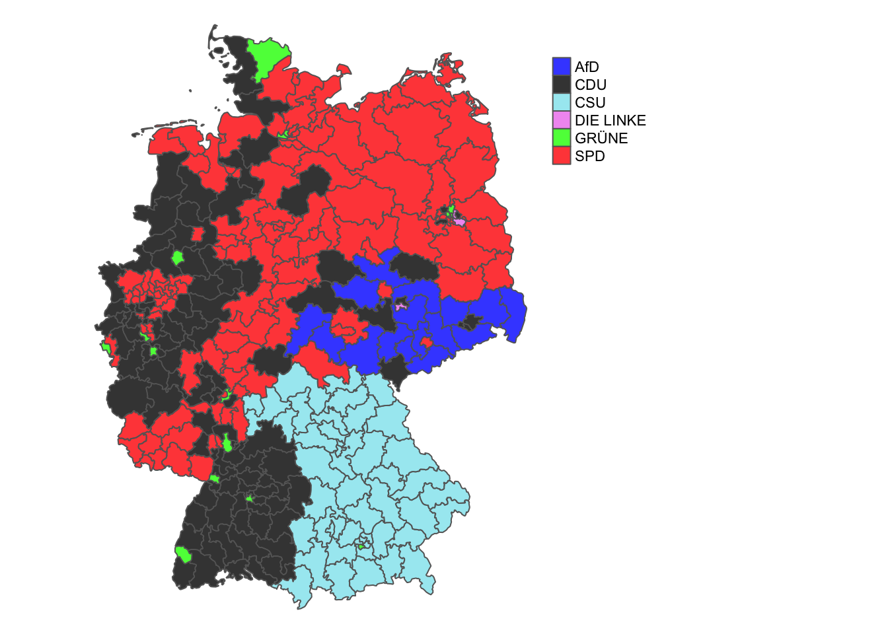
Figure 26.16: Winners of Erststimmen seats by political party
There are strong geographic patterns. The CSU in light blue won (almost) all the seats in Bavaria. The CDU did well in the West. The AfD did well in the South of the old East Germany. The SPD won seats in the North of the old East Germany and in former industrial heartlands like the Ruhrgebiet. The Greens won a sprinkling of seats across the country in mainly urban areas. On this map it is hard to see that they won the one seat in Munich that the CSU failed to win in Bavaria (but see the next maps). The Linke won two seats in Berlin and one in Leipzig (again, see the next maps), essential for them to be represented in the Bundestag. Otherwise their failing to achieve 5% of Zweitstimmen would have excluded them. The FDP won no seats with Erststimmen.
The following set of maps shows where each party won Erststimmen seats. Bundesländer borders have been included for orientation.
Code
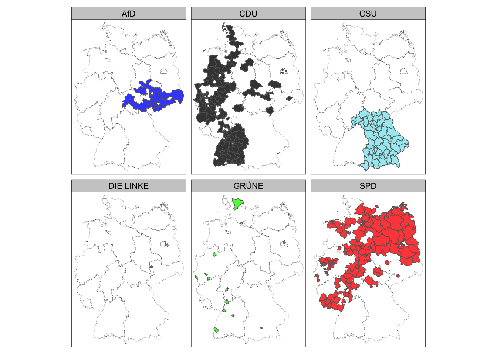
Figure 26.17: Where political parties won Erststimmen seats
The seats won by the Greens in cities and by Die Linke in Berlin and Leipzig are now just about visible.
With a first-past-the-post system it is possible to win a seat with a low percentage of the votes. Figure 26.18 displays dotplots of the winning percentages by party in the 2021 German election and in the 2019 UK election. For the UK the three dotplots to the right are for the 18 seats won by parties based in Northern Ireland, the 4 seats won by Plaid Cymru in Wales, and the 48 seats won by the SNP in Scotland. None of these parties put up candidates in other parts of the UK.
Code
eGER <- ggplot(btwYwin1, aes(Partei, Prozent21)) + geom_point(aes(colour=Partei)) + scale_colour_manual(values=polpal6) + theme(legend.position="none") + ylab(NULL) + xlab("Germany 2021") + geom_hline(yintercept=50, lty="dotted", colour="black") + ylim(0,100)
uk19 <- bes_2019
uk19 <- uk19 %>% rowwise() %>% mutate(winV=max(c_across(con_vote_19:other_vote_19), na.rm=TRUE), winP=100*winV/(total_vote_19-rejected_vote_19))
polnames2 <- c("Conservative", "Labour", "Liberal Democrat", "Green", "NI parties", "Plaid Cymru", "Scottish National Party")
polpal2 <- c("#0087DC","#DC241f", "#FDBB30", "#528D6B", "orange", "yellowgreen", "yellow4")
names(polpal2) <- polnames2
uk19 <- uk19 %>% mutate(win19=ifelse(winner_19 %in% c("Alliance", "Democratic Unionist Party", "Sinn Fein", "Social Democratic & Labour Party"), "NI parties", winner_19))
eUK <- ggplot(uk19 %>% filter(!win19 %in% c("Speaker")), aes(win19, winP)) + geom_point(aes(colour=winner_19)) + scale_colour_manual(values=polpal2) + theme(legend.position="none") + ylab(NULL) + xlab("UK 2019") + geom_hline(yintercept=50, lty="dotted", colour="black") + scale_x_discrete(labels=c("Conservative" = "Con", "Green" = "Green", "Labour" = "Lab", "Liberal Democrat" = "LibDem", "Plaid Cymru" = "PlaidC", "Scottish National Party" = "SNP")) + ylim(0,100)
eGER + eUK
Figure 26.18: Seat-winning percentages by party in Germany 2021 and in the UK 2019
It is surprising to see that in Germany only one seat was won with more than 50% of votes cast (Aurich - Emden) and that one was actually won with less than 20% (Dresden II - Bautzen II). This is a consequence of having several competing parties. The UK uses a first-past-the-post election for every MP. In 2019, the most recent election, 425 of the 649 MPs elected won more than 50% of the votes cast in their constituency. The lowest percentage winner got 32.6% in South Down, Northern Ireland.
26.4 How do first-past-the-post and party votes compare?
Comparing the two votes for the six parties who got the most Zweitstimmen means dropping Die Linke and including the FDP.
Code
ctw <- btw1v %>% ungroup() %>% select(WkName, Partei, Stimme, Anzahl, Bundesland, Region) %>% filter(Partei %in% c("CDU", "CSU", "SPD", "GRÜNE", "AfD", "Die Linke", "FDP"))
ctW <- ctw %>% group_by(Region, Bundesland, WkName, Partei) %>% pivot_wider(values_from="Anzahl", names_from="Stimme", names_prefix="v")
ctW <- ctW %>% ungroup() %>% group_by(Region, Bundesland, WkName) %>% arrange(desc(v1), .by_group=TRUE) %>% mutate(Rank=rank(-v1), Winner=ifelse(Rank==1, "Yes", "No"))
ctW <- ctW %>% unite("Farbe", c("Winner", "Partei"), sep="_", remove=FALSE)
ggplot(ctW %>% arrange(Farbe), aes(v2, v1)) + geom_point(aes(colour=Farbe)) + facet_wrap(vars(Partei)) + geom_abline(intercept=1, slope=1, colour="sienna2") + coord_fixed(xlim=c(0, 90000), ylim=c(0, 90000)) + theme(legend.position="none", axis.title.y = element_text(angle = 0, vjust = 0.5)) + scale_colour_manual(values=c("grey70", "grey70", "grey70", "grey70", "grey70", "grey70", "blue", "grey20", "lightblue", "green", "red")) + ylab("Erststimmen") + xlab("Zweitstimmen")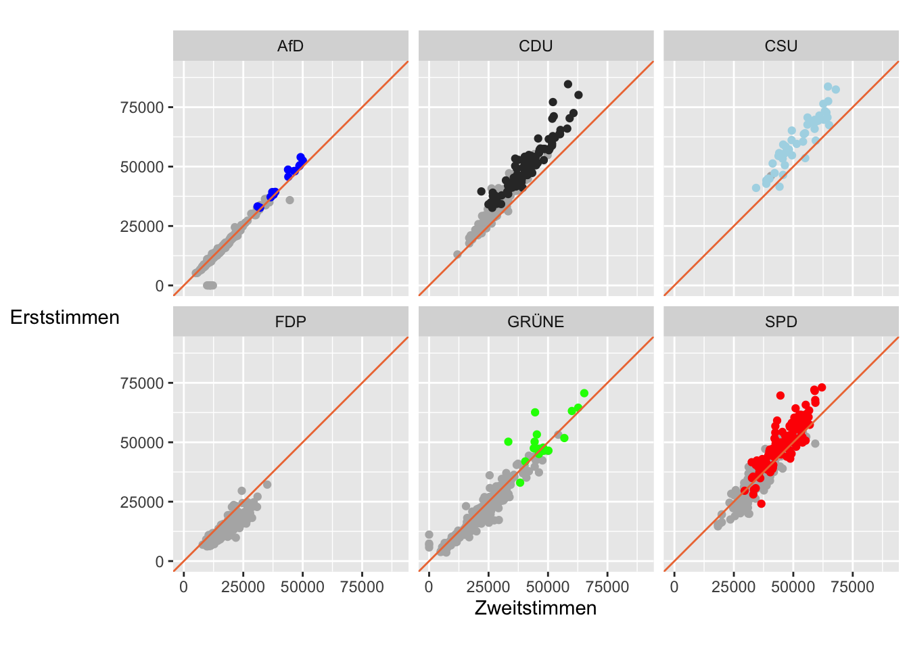
Figure 26.19: Erststimmen and Zweitstimmen by major parties (brown lines mark equality and seats that were won on Erststimmen are coloured by the party’s colour)
There was more agreement than might have been expected. AfD voters stuck closely to their party, with the exception of six seats where they had no individual candidate and one seat in Thüringen, where the CDU ran a well-known right-wing candidate (although the SPD candidate still won). The CDU and CSU candidates generally got more votes than the party, possibly from the FDP and smaller parties who had no chances of winning individual seats. The Greens did not qualify for Zweitstimmen in Saarland, as previously discussed. Otherwise there were some seats where individual candidates did particularly well relative to their party. This happened with SPD and CDU candidates too.
Figure 26.16 was plotted using Erststimmen to show which parties won the individual seats. Replotting with Zweitstimmen and colouring by which party had the most votes in each constituency gives Figure 26.20.
Code
btwY2 <- btw1v %>% ungroup() %>% filter(Stimme==2)
btwYwin2 <- btwY2 %>% group_by(Bundesland, WkNr, WkName) %>% arrange(desc(Anzahl), .by_group=TRUE) %>% slice_head(n=1)
btwYwin2 <- btwYwin2 %>% mutate(WkNr=as.numeric(WkNr)) %>% arrange(WkNr)
f1y2 <- st_sf(data.frame(GermanyMap, btwYwin2))
tm_shape(f1y2) + tm_polygons(col="Partei", palette=polpal6, alpha=0.8) + tm_layout(frame=FALSE, legend.outside = TRUE, legend.title.color="white")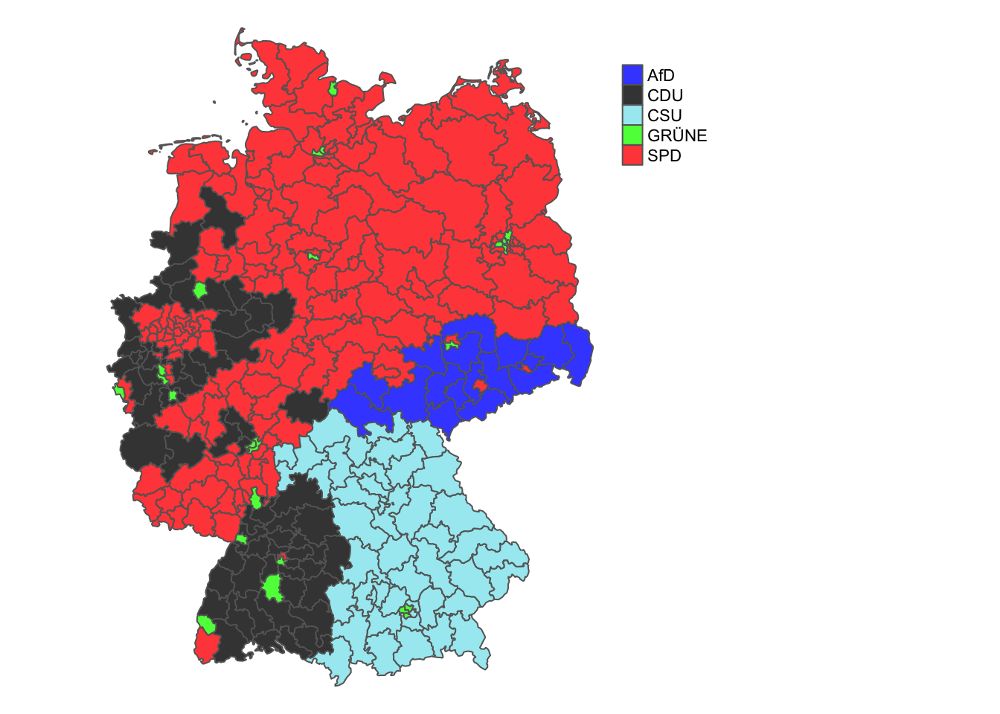
Figure 26.20: Which party got the most Zweitstimmen in each constituency
Figure 26.20 presents a more coherent pattern than Figure 26.16. As has been pointed out on Francois Valentin’s Twitter feed (Valentin (2022)), the map’s form is reminiscent of how voting in Germany looked over a hundred years ago. The SPD won most votes in the area that was Prussia, the AfD won most votes in Saxony, and the CSU most in Bavaria.
Code
btwYZ <- btw1v %>% ungroup()
btwYwinZ <- btwYZ %>% group_by(Bundesland, WkNr, WkName, Stimme) %>% arrange(desc(Anzahl), .by_group=TRUE) %>% slice_head(n=1)
btwYwinZ <- btwYwinZ %>% mutate(WkNr=as.numeric(WkNr)) %>% arrange(WkNr)
btwYwinZ <- btwYwinZ %>% select(WkNr, WkName, Land, Partei, Stimme, Bundesland, Prozent21)
btwYwinZ <- btwYwinZ %>% pivot_wider(names_from="Stimme", values_from=c("Partei", "Prozent21"))
f1xZ <- st_sf(data.frame(GermanyMap, btwYwinZ))
f1xZ <- f1xZ %>% mutate(dx=ifelse(Partei_1==Partei_2, NA, Partei_2))
tm_shape(f1xZ) + tm_polygons(col="dx", palette=polpal6, alpha=0.8, textNA="No difference") + tm_layout(frame=FALSE, legend.outside = TRUE, legend.title.color="white")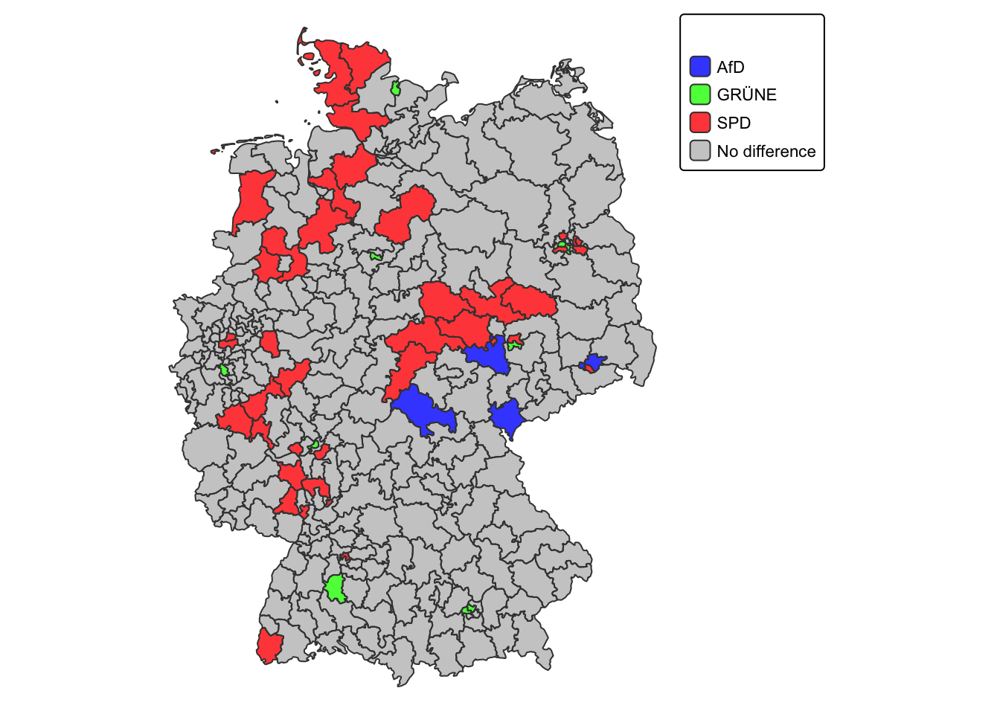
Figure 26.21: Consituencies where the party that got the most Zweitstimmen did not get the most Erststimmen, coloured by the party with the most Zweitstimmen
In many constituencies the party of the candidate that had the most Erststimmen also received the most Zweitstimmen. Restricting the map to the constituencies where one party had the most Erststimmen and another the most Zweitstimmen and colouring by the party with the most Zweitstimmen gives Figure 26.21. SPD candidates failed to win seats on Erststimmen relatively often, while Green and AfD candidates failed occasionally. Neither the CDU nor the CSU ever failed to win on Erststimmen when they won on Zweitstimmen.
Answers The Greens, the SPD, and “Other” parties did well in the 2021 election (compared with the 2017 election). There are strong geographical patterns of party support, for instance for the Greens and the AfD. The Greens did better in urban constituencies than in rural ones. Candidates winning individual seats with Erststimmen almost always won less than 50% of the votes in 2021.
Further questions Which structural factors were most important? Why did parties do much better in certain individual seats than in other similar ones?
Graphical takeaways
- UpAndDown plots show relative and absolute changes in the same plot. (Figure 26.4)
- Draw smaller groups last if colour is used and there is overplotting. (Figures 26.8, 26.11, and 26.14)
- Scatterplots reveal many kinds of information, e.g., points with equal values (Berlin in Figure 26.14), differences between groups (Berlin compared with the rest of the East of Germany in Figure 26.11), unusual cases within highly correlated variables (Figure 26.19).
- Highlighted parallel coordinate plots identify potential explanatory variables. (Figures 26.12, 26.9, and 26.15)